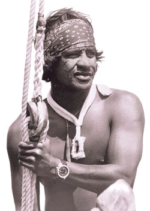

Miki Dora
Eddie Aikau
Taj Burrow
Skip Frye
The term surfing usually refers to the act of riding a wave using a board, regardless of the stance. There are several types of boards. The Moche of Peru would often surf on reed craft, while the native peoples of the Pacific surfed waves on alaia, paipo, and other such water craft. Ancient cultures often surfed on their belly and knees, while the modern-day definition of surfing most often refers to a surfer riding a wave standing on a surfboard; this is also referred to as stand-up surfing.
| Miki Dora |
 Eddie Aikau |
Taj Burrow |
Skip Frye |